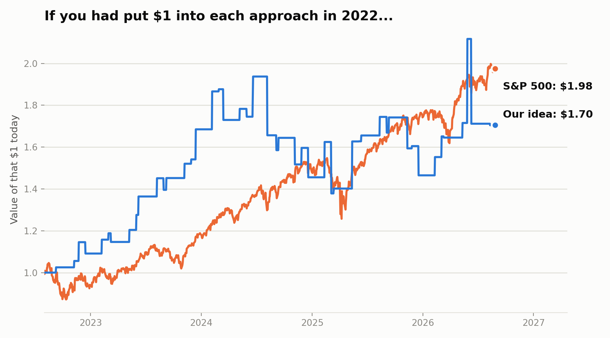

This page tracks an ongoing test of that question — in plain language, updated as the project moves forward. No finance background needed to follow along, and we're being upfront when the answer is "not yet" or "we're not sure."
When a big company like NVIDIA reports its earnings, that news doesn't just affect NVIDIA's own stock. Other companies that build products around NVIDIA's chips — companies like Dell, HPE, or Supermicro — sometimes see their own stock react too, sometimes a little later, once investors connect the dots between "NVIDIA had a great quarter" and "the companies that build servers with NVIDIA's chips will probably do well too."
The bet we're testing: if a system could read that news the moment it's published and act faster than most investors get around to it, could it reliably catch that short delay before the market fully catches up? That's the whole idea. Nothing more exotic than that.
We started small on purpose: watched one company's earnings (NVIDIA) and one company downstream of it (Supermicro), across just 4 earnings reports. Small enough to check every number by hand.
A math mistake turned up in how we compared our approach against "just investing in the stock market as a whole" — we were accidentally giving our approach an unfair advantage. We found it, fixed it, and re-checked the numbers by hand to make sure the fix was right.
Instead of watching one downstream company, we watched three together (Supermicro, Dell, and HPE), and added a second market comparison for fairness.
Most recently: instead of only watching NVIDIA, we added two more computer-chip companies (AMD and Broadcom) and stretched the test back four years — 47 "earnings report day" events in total, instead of just 4.
When we broke the results down by company, the pattern only really showed up for AMD. For NVIDIA — the company this whole idea was originally built around — there was no pattern at all. That's a real problem for the idea, not a small footnote, and we're reporting it exactly like that.
We ran the numbers past a second, independent AI reviewer as a standard check. It caught that we'd been overstating how confident we could be that AMD was genuinely "different" from the other two companies — the honest answer is we can't prove that yet, mathematically. We corrected the write-up rather than keeping the stronger-sounding claim.

Despite some promising-looking stretches along the way, simply doing nothing beyond holding a broad market index fund still came out ahead over this period. Important caveat: this is a look backward at data we already had — it tells us whether the idea would have worked in the past, not whether it will work going forward. That's exactly why the next phase of this project (see below) is designed to test it forward instead.
Here's a simple way to check: out of the times each company reported earnings, how often did our approach beat the market in the days right after? If our idea has no real effect at all, we'd expect that to land close to a coin flip — about 50%, purely by chance.
The dashed line marks 50% — a coin flip. NVIDIA landed almost exactly on it (no better than chance). AMD and Broadcom landed higher, which looks encouraging at a glance.
But here's the honest part: when we ran the actual statistical test for whether these differences between companies are real or could just be luck from a small sample, the math said we can't tell yet. With only 15–16 earnings reports per company, a company "getting lucky" a handful of extra times isn't unusual — it's roughly what you'd expect sometimes even with pure chance. So this chart is genuinely what we found, but it is not proof that AMD is special.
This is not a working trading strategy, and nothing here is being used to trade real money. Three things are true at once: the results so far are weak and inconsistent between companies; we genuinely can't yet tell a real pattern apart from chance; and even if a pattern is eventually confirmed, using it to trade real money is a much later, separate decision that this project has intentionally not reached yet.
We're publishing this working-in-progress, imperfect version of the results on purpose, rather than waiting for a polished success story — because being honest about what doesn't work yet is the actual point of doing this carefully.
The real test. Everything above looks backward at data we already had, which makes it easy to fool yourself. The next phase flips that around: build a system that reads company filings as they're published and makes a prediction in real time, before anyone knows whether it's right — then compare it, going forward, against a simple automatic baseline that doesn't use any AI at all. Only if the AI-based approach clearly and reliably beats that simple baseline, over a long enough stretch of real time, does this project even consider a further step toward real trading.
A broader test. So far, every company in this test has been a computer-chip maker — which means any pattern we find might just be a quirk of that one industry, not something general. The next round widens the list of companies watched to include very different kinds of businesses (carmakers, homebuilders, retailers, airlines, and more), specifically so a good result can't just be an artifact of one industry's ups and downs.